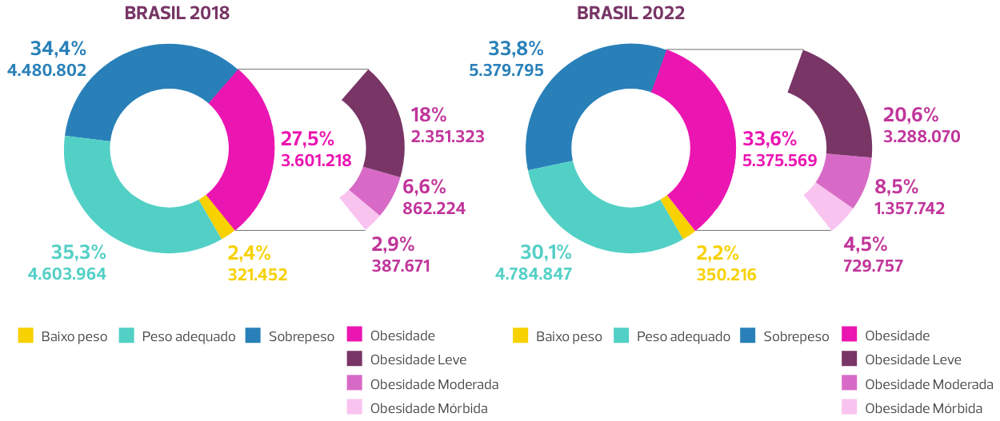

Aula 4
Hipertensão arterial crônica e gravidez
Introdução
A HAC é uma doença crônica não transmissível muito prevalente na população brasileira, frequentemente relacionada a doenças cardíacas e neuropatias, e que cursa com sequelas em longo prazo bem definidas.
A incidência de HAC na gestação está aumentando, principalmente devido à sua associação com obesidade e ao deslocamento da idade reprodutiva para faixas etárias mais avançadas. A obesidade também se encontra mais prevalente, tanto na população geral quanto entre gestantes.
Mulheres adultas em idade reprodutiva com sobrepeso e obesidade
A HAC acomete predominantemente pacientes com idade a partir de 30 anos, potencialmente inseridas no mercado de trabalho.
> Impacto da HAC na morbimortalidade materna
Gestantes portadoras de HAC apresentam maior risco de óbito, particularmente pela sobreposição de pré-eclâmpsia. A HAC é um importante fator de risco para pré-eclâmpsia sobreposta, promovendo impacto significativo na mortalidade materna. Portanto, as gestantes portadoras de HAC representam um grupo que necessita de atendimento clínico qualificado.
A HAC representa um dos principais motivos de morbidade materna grave (near miss materno) e se associa em maior frequência a:
- Acidente vascular encefálico (AVE).
- Edema agudo de pulmão.
-
Insuficiência renal.
Os danos e sequelas são mais frequentes entre mulheres vivendo em países em desenvolvimento e menos frequentes quando a hipertensão é classificada como leve.
A HAC é duas vezes mais comum entre mulheres negras, provocando mais complicações obstétricas nestas do que entre mulheres brancas.
Os danos cardiovasculares estão bem estabelecidos entre mulheres portadoras de HAC. Alterações ecocardiográficas, tais como aumento do átrio e da massa ventricular esquerda, do débito cardíaco e do volume sistólico são mais comumente encontradas no terceiro trimestre da gestação.
A sobreposição de pré-eclâmpsia ocorre em 30% a 40% das gestantes portadoras de HAC, o que aumenta a ocorrência de outras morbidades, como:
- Síndrome Hellp.
- Cesarianas.
- Edema agudo de pulmão.
-
Insuficiência renal etc.
A duração da HAC por mais de quatro anos e história prévia de pré-eclâmpsia aumentam significativamente o risco de pré-eclâmpsia sobreposta, insuficiência renal e disfunção ventricular, consequentemente aumentando a ocorrência de complicações clínicas graves e comprometendo os prognósticos materno e perinatal.
Em gestantes com hipertensão arterial crônica (HAC), qualquer piora clínica ou alteração laboratorial deve levantar, em primeiro lugar, a suspeita de sobreposição com pré-eclâmpsia.
As potenciais repercussões fetais são restrição do crescimento intrauterino (CIUR), baixo peso ao nascer e prematuridade, principalmente na vigência de pré-eclâmpsia sobreposta.
> Desafios no diagnóstico do estado hipertensivo
Clique aqui e saiba mais sobre a técnica de aferição da pressão arterial (PA).
Embora, classicamente, o limite de idade gestacional que define o acometimento da pré-eclâmpsia seja a 20ª semana, tem-se sugerido que, nas situações de apresentação atípica (doença trofoblástica gestacional, gemelaridade), esse limite não seja tão rígido. Estudos demonstram que algumas gestantes irão desenvolver hipertensão sem proteinúria antes da 20ª semana e não persistirão hipertensas após o parto, representando apresentação clínica distinta e individualizada.
Outro desafio diagnóstico é quanto à ocorrência de proteinúria, pois a presença desta não está exclusivamente associada à pré-eclâmpsia. Nefropatias subjacentes e com proteinúria positiva podem determinar alterações da PA detectadas após o início tardio do pré-natal, com normalização do estado pressórico após a gestação ou até depois de dois anos, representando uma apresentação atípica, provavelmente com hipertensão relacionada apenas ao ciclo gravídico.
Para minimizar dificuldades no reconhecimento do estado hipertensivo, facilitando a sua classificação, seria ideal o conhecimento da PA antes da gravidez. Entretanto, isso nem sempre é possível, e a PA também pode ser subestimada pela autoaferição.
A própria gravidez provoca uma redução de pelo menos 30% na resistência vascular periférica inicial. A maior redução ocorre entre a 16ª e a 18ª semana. Portanto, as modificações fisiológicas da gestação promovem uma redução da PA em pelo menos 10% a partir da 7ª semana de gravidez. Essa adaptação fisiológica é capaz de reduzir a PAD em pelo menos 20 mmHg. Sendo assim, em hipertensas não reconhecidas, essa evolução pode "normalizar a pressão mesmo sem tratamento”, dificultando o diagnóstico de hipertensão no início da gravidez.
Quando disponíveis, biomarcadores como o sFlt-1 e/ ou o PLGF podem auxiliar no diagnóstico diferencial e na identificação da pré-eclâmpsia. A aplicabilidade é maior após a 20ª semana, permitindo confirmar a suspeita de pré-eclâmpsia sobreposta. Os principais perfis clínicos de aplicabilidade são as gestantes acometidas previamente por pré-eclâmpsia, e as com HAC, doença renal e/ ou diabetes mellitus preexistentes, situações que limitam a interpretação devido a possível presença de proteinúria.
A expressão clínica da HAC também pode ser classificada. Uma das formas é utilizar os valores da PAD, como:
Leve
< 100 mmHg
Moderada
entre 100 e 110 mmHg
Grave
≥ 110 mmHg
Os resultados perinatais são muito relacionados à expressão clínica da HAC. Dados brasileiros apontam associação significativa entre formas graves de HAC e as seguintes condições:
- Prematuridade.
- Restrição de crescimento intrauterino (RCIU).
-
Mortalidade perinatal.
A associação da HAC com outras comorbidades e fatores de risco também é muito prevalente. A obesidade e a síndrome metabólica são as mais relevantes. Alguns estigmas podem ser identificados, tais como o tipo de obesidade e os sinais de resistência periférica à insulina.
A avaliação inicial de gestantes com HAC deve incluir:
- Provas de função renal e hepática.
- Ionograma.
- Hemograma.
- Relação proteinúria/creatinúria ou proteinúria de 24 horas.
-
Eletrocardiograma ou ecocardiograma.
Essa propedêutica contribui para o reconhecimento da expressão clínica e das repercussões em órgãos-alvo.
Pelo menos 3 a 5% dos casos de HAC possuem etiologia secundária. O reconhecimento precoce da hipertensão de etiologia secundária permite oferecer intervenções oportunas e específicas de controle e tratamento.
A estenose da artéria renal é etiologia de HAC secundária, que deve ser sempre aventada diante do surgimento de hipertensão antes dos 30 anos, hipertensão resistente, alterações da função renal e ocorrência súbita de edema pulmonar.
Alguns aspectos clínicos indicam a probabilidade de hipertensão renovascular, como etiologia secundária de HAC, com destaque para hipertensão arterial grave (ou resistente) com insuficiência renal progressiva, hipertensão arterial acelerada ou maligna, edema agudo de pulmão súbito e elevação de creatinina sérica induzida por uso de inibidores da enzima conversora de angiotensina (IECA).
Entre adultos jovens (19 a 40 anos), uma faixa etária muito importante para a Obstetrícia, as causas secundárias de HAC incidem em até 10%. As principais etiologias são doença parenquimatosa renal, doença renovascular e, eventualmente, doença monogênica não diagnosticada.
Estudos da morfologia vascular do leito placentário de gestantes portadoras de HAC demonstram a presença de alterações na interface fetoplacentária.
Redução do lúmen das artérias espiraladas comprometendo o fluxo uteroplacentário e, consequentemente, a nutrição fetal, são mais frequentes entre gestantes com HAC moderada e grave. Portanto, grávidas portadoras de HAC apresentando PAD ≥ de 100 mmHg desde o início do pré-natal são mais propensas a evoluir com danos na interface uteroplacentária e repercussões na nutrição fetal.
A principal repercussão clínica fetal dos danos vasculares (ateromatose, necrose fibrinoide) na interface materno-fetal de gestantes com HAC é a restrição do crescimento intrauterino, aumentando a incidência de recém-natos pequenos para a idade gestacional.
Essas alterações vasculares também são encontradas nos estudos de leitos placentários de gestantes com HAC que evoluíram com descolamento prematuro da placenta (DPP). Portanto, assim como os danos vasculares cerebrais e cardiovasculares são bem reconhecidos fora da gestação, essas repercussões crônicas na placenta também ocorrem especificamente em gestantes portadoras de HAC, impondo a possibilidade de desfechos graves e consequente morbimortalidade neonatal.
> Manejo da Hipertensão Arterial Crônica na gravidez
A Rede Brasileira de Estudos sobre Hipertensão na Gravidez (2023) elaborou um protocolo específico destinado a auxiliar na assistência ao pré-natal, parto e puerpério de gestantes portadoras de HAC, atualmente se apresentando como a principal diretriz nacional de referência.
Clique aqui e saiba mais sobre o protocolo nº 01/2023 da Rede Brasileira de Estudos sobre Hipertensão na Gravidez.
A gravidade da HAC na gestação define a melhor época de internação eletiva para o parto. O consenso atual é de interrupção dos casos:
Leves
39 semanas
Moderados
38 semanas
Graves
37 semanas, preferencialmente por meio de indução de parto vaginal.
A presença de lesões em órgãos-alvo e de alterações na vitalidade fetal devem influenciar decisões individualizadas, tanto de antecipação dessas idades gestacionais de interrupção quanto da via de parto.
Os principais critérios de internação são:
- PAD ≥ 110 mmHg.
- Diagnóstico de pré-eclâmpsia sobreposta.
- Quadros de urgência e emergência hipertensiva.
- Controle inadequado dos níveis pressóricos.
-
Alterações na vitalidade fetal.
A orientação pré-concepcional é de extrema importância para mulheres portadoras de HAC. Estão indicados rastreamento de lesões em órgãos-alvo, investigação de etiologias secundárias de HAC, assim como intervenções direcionadas às comorbidades associadas, principalmente obesidade e diabetes. A avaliação e revisão das terapias medicamentosas devem ter foco na prevenção do uso de fármacos que são contraindicados na gestação, tais como os IECA.
No Brasil, pelo menos dois terços das gestações são não planejadas, reforçando a necessidade da orientação pré-concepcional como parte das atividades de educação em saúde.
> Prevenção da sobreposição de pré-eclâmpsia entre gestantes hipertensas
Uma vez que é frequente a associação entre HAC e pré-eclâmpsia sobreposta, toda gestante portadora de HAC deve receber profilaxia secundária para pré-eclâmpsia, na seguinte dosagem:
Ácido acetilsalicílico – AAS
100 mg a noite; iniciar na 12ª semana — podendo ser iniciada até a 20ª semana —, usar até a 36ª semana.
Suplementação de cálcio
1° trimestre ao final da gestação; carbonato de cálcio 1 a 2 g/ dia ou citrato de cálcio 2 a 4 g/ dia; doses fracionadas de 500 mg.
Diversos estudos nacionais demonstraram a baixa ingesta de cálcio por parte das mulheres, particularmente as de alto risco para a ocorrência de pré-eclâmpsia.
Clique aqui e saiba mais sobre a nota técnica conjunta nº 251/2024 do Ministério da Saúde que foi criada para estabelecer a suplementação universal de cálcio para gestantes.
Além da prescrição do AAS e da suplementação de cálcio, o exercício moderado por pelo menos 140 minutos semanais também se encontra recomendado como estratégia de prevenção da pré-eclâmpsia sobreposta. Ressalta-se que atividades físicas moderadas não possuem nenhuma contraindicação na gravidez.
A Rede Brasileira de Estudos sobre Hipertensão na Gravidez (2023) preconiza a identificação de riscos na primeira consulta pré-natal, classificando-os em risco moderado ou alto e indicando a prescrição de AAS e cálcio diante da presença de um fator de alto risco ou dois de risco moderado.
Por fim, enumeramos como principais mensagens finais na assistência a gestantes portadoras de HAC: identificação qualificada do estado hipertensivo na gestação exige técnica adequada de aferição da PA; HAC se associa a danos vasculares de longo prazo; e devemos sempre estar atentos para a sobreposição de pré-eclâmpsia e suas repercussões na morbimortalidade materna e perinatal.
Você concluiu esta aula, continue se empenhando nos seus estudos. Siga para a próxima aula!